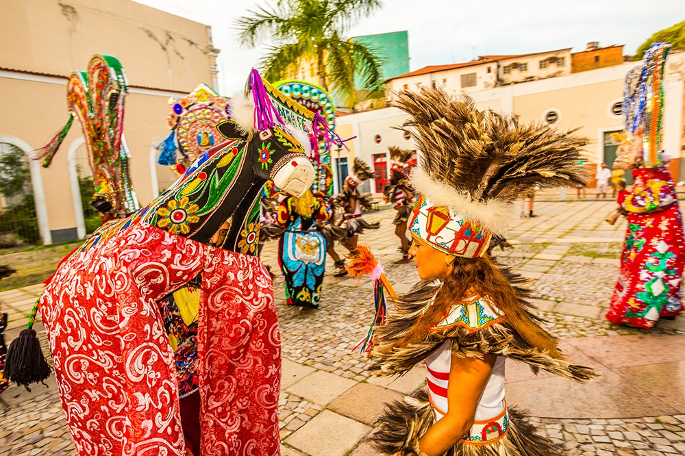
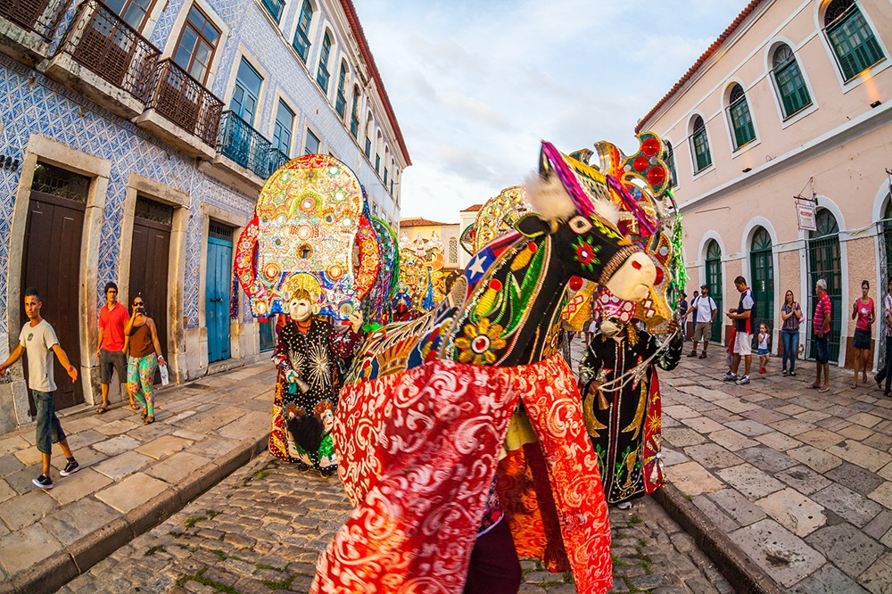
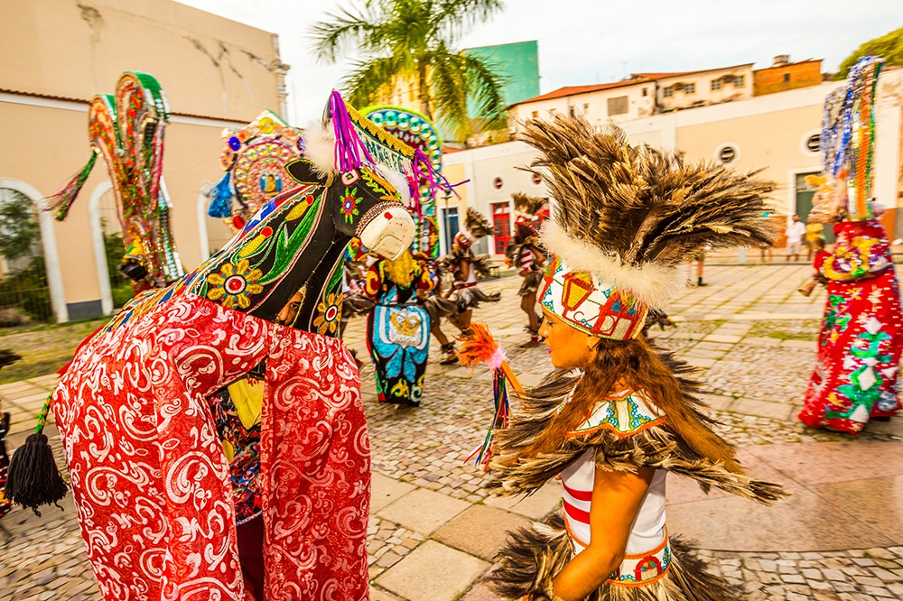
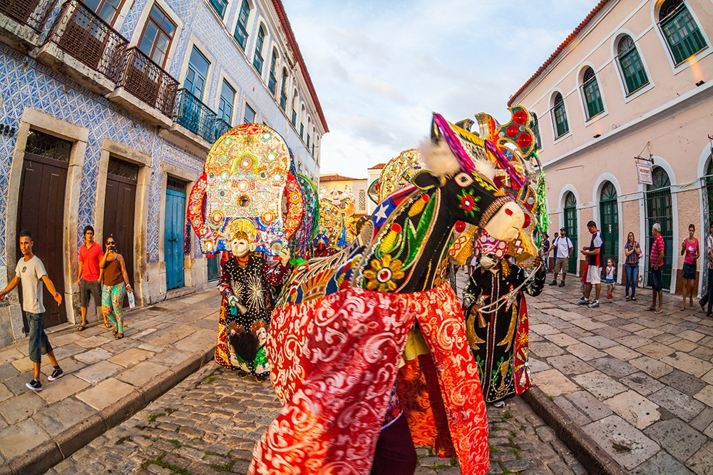
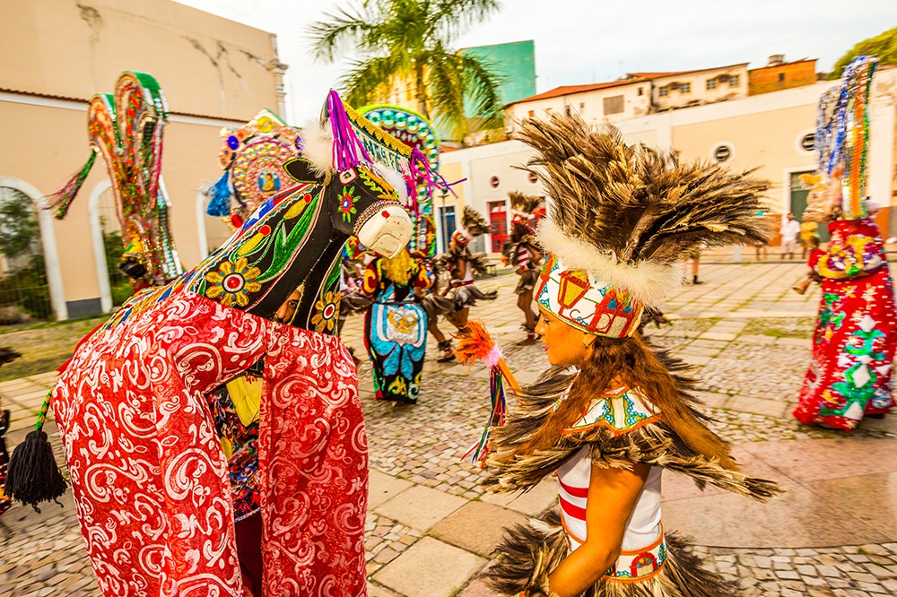
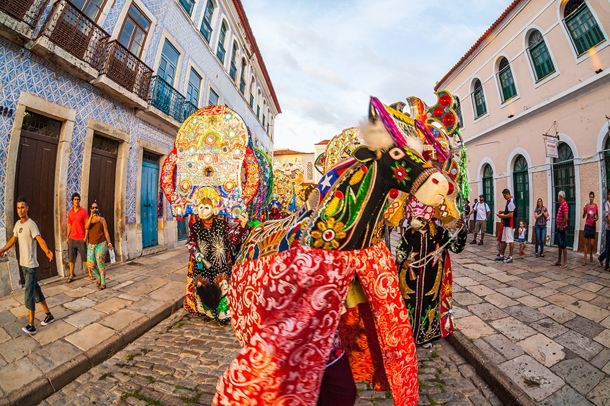
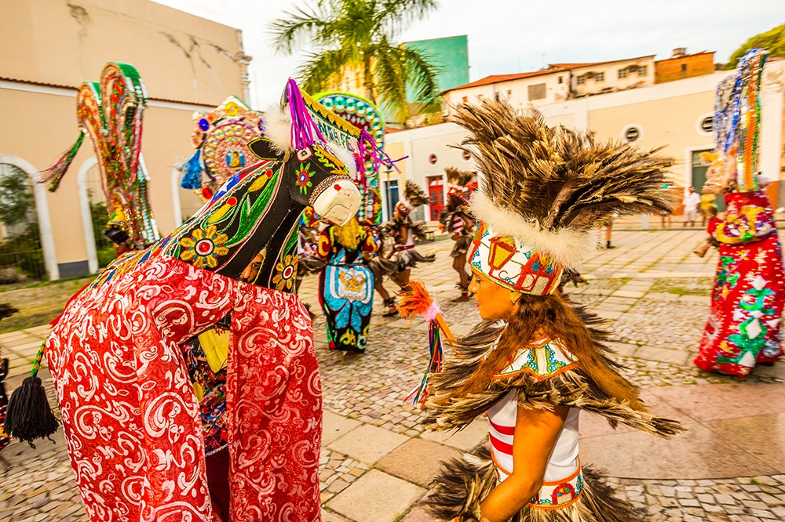
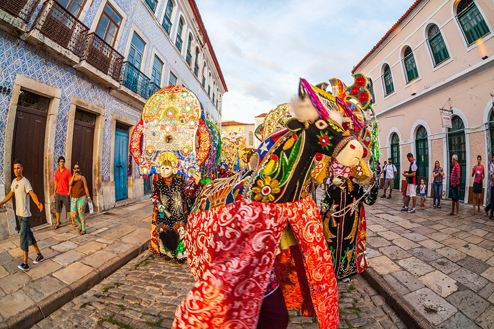

Origem
Fundada em 8 de setembro de 1612, pelos franceses Daniel de La Touche e Fraçois de Rasilly, cujo objetivo comum, dentro do contexto da economia mercantilista, era estabelecer a França Equinocial, a capital maranhense encontra na homenagem ao então Rei da França, Luís XIII, as raízes da sua nomenclatura: São Luís.
Habitação
A capital maranhense tem cerca de 1.115.932 habitantes, sendo a 13ª capital com mais habitantes do Brasil.
População estimada[2021]: 1.115.932 pessoas
População no último censo[2010]: 1.014.837 pessoas
Densidade demográfica[2010]: 1.215,69 hab/km²
Curiosidades
Centro Histórico:
Com mais de 3.500 edificações seculares, o Centro Histórico de São Luís possui o título de Patrimônio Mundial pela Organização das Nações Unidas para a Educação, a Ciência e a Cultura (Unesco) e é o cenário ideal para passeios, fotos, casamentos e também para gravação de novelas.
Ser uma ilha
São Luís é a única capital de um Estado do Nordeste que fica localizada em uma ilha. Essa particularidade torna a cidade um destino ideal para quem busca praias, sol, dunas, natureza e aventura.
Jamaica Brasileira
Em São Luís, o reggae é um dos ritmos mais populares. Não pode tocar uma pedra (maneira como os regueiros chamam as músicas boas do ritmo) que você já vê um casal dançando coladinho. Essa é uma das especialidades dos ludovicenses.